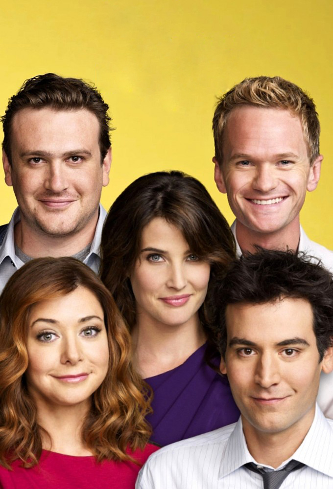

How I Met Your Mother
"How I Met Your Mother" é uma sitcom americana que foi ao ar de 2005 a 2014. A história gira em torno de Ted Mosby, que conta aos seus filhos como conheceu a mãe deles. Ambientada em Nova York, a série acompanha as aventuras de Ted com seus amigos próximos: Marshall, Lily, Barney e Robin.
A narrativa é única, usando flashbacks e flash-forwards para contar a vida de Ted até conhecer a mãe de seus filhos. Ao longo da série, os espectadores são levados por uma jornada através dos relacionamentos de Ted, altos e baixos em sua carreira e as aventuras hilárias e adoráveis de seus amigos.
Barney Stinson, interpretado por Neil Patrick Harris, é um dos personagens mais icônicos da série. Suas frases de efeito, esquemas mirabolantes e traços de personalidade únicos o tornaram um favorito dos fãs. A série também popularizou o conceito do "Código dos Irmãos" e do "Livro de Jogadas", temas recorrentes ao longo da série.
Conforme a história avança, os espectadores são apresentados a vários interesses românticos de Ted, incluindo Robin, interpretada por Cobie Smulders, que se torna uma figura central no grupo apesar de seu relacionamento complicado com Ted. Ao longo de suas nove temporadas, "How I Met Your Mother" permanece uma sitcom querida, conhecida por seu humor, momentos emocionantes e o mistério de com quem Ted acabará ficando.